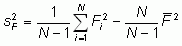
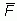
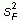
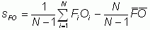

Real-time verification systems often produce daily verification statistics from the spatial comparisons of forecasts and observations, and store these statistics in files. To get aggregate statistics for a period of many days it is tempting to simply average all of the daily verification statistics. Note that in general this does not give the same statistics as those that would be obtained by pooling the samples over many days. For the linear scores such as mean error, the same result is obtained, but for non-linear scores (for example, anything involving a ratio) the results can be quite different.
For example, imagine a 30-day time series of the frequency bias score, and suppose one day had an extremely high bias of 10 because the forecast predicted an area with rain but almost none was observed. If the forecast rain area was 20% every day and this forecast was exactly correct on all of the other 29 days (i.e., bias=1), the daily mean frequency bias would be 1.30, while the frequency bias computed by pooling all of the days is only 1.03. These two values would lead to quite different conclusions regarding the quality of the forecast.
The verification statistics for pooled samples are preferable to averaged statistics because they are more robust. In most cases they can be computed from the statistics for daily forecasts if care is taken. (Note: we talk about "daily" forecasts and statistics but these guidelines apply to aggregating verification results from multiple forecasts on any scale.) The guidelines below describe how to correctly use the daily statistics to obtain aggregate multi-day statistics. An assumption is made that each forecast contains the same number of samples, N (number of gridpoints or stations).
For pooled categorical scores computed from the 2x2 contingency table:
First create an aggregate contingency table of hits, misses, false alarms, and correction rejections by summing their daily values, then compute the categorical scores as usual.
For linear scores (mean error, mean absolute error MAE, mean squared error MSE, linear error in probability space LEPS):
The average of the daily statistics is the same as the statistics computed from the pooled values.
For non-linear scores:
The key is to transform the score into one for which it is valid to average the daily values. The mean value is then transformed back into the original form of the score.
Root mean squared error RMSE: First square the daily values to obtain the MSE. Average the squared values, then take the square root of the mean value.
Root mean squared factor RMSF: Take the logarithm of the daily values and square the result, then average these values. Transform back to RMSF by taking the square root and then the exponential.
Variance s2: The variance can also be expressed as . To compute the pooled variance from the daily variances, subtract the second term (computed from the daily ) from  to get the daily value of the first term. Average the daily values of the first term, and use the average of the daily values to compute the second term. Recombine to get the pooled variance.
Standard deviation s: Square the daily values of s to get daily variances. Compute the pooled variance as above, then take the square root to get the pooled standard deviation.
Correlation coefficient r: Multiply the daily correlations by the daily sF x sO to get the covariance, sFO. The covariance can be expressed as . Follow the steps given for s2 above to get a pooled covariance. Divide by theproduct of the pooled standard deviations to get the pooled correlation.
Skill scores: Use the pooled values of MAE or MSE to compute the skill scores.